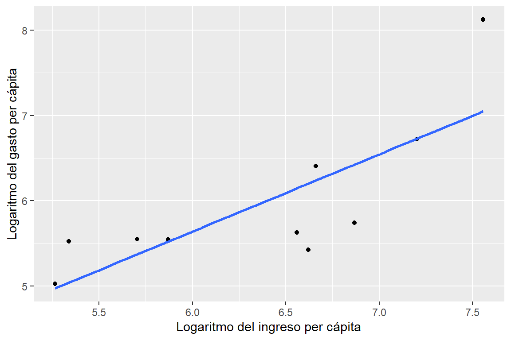
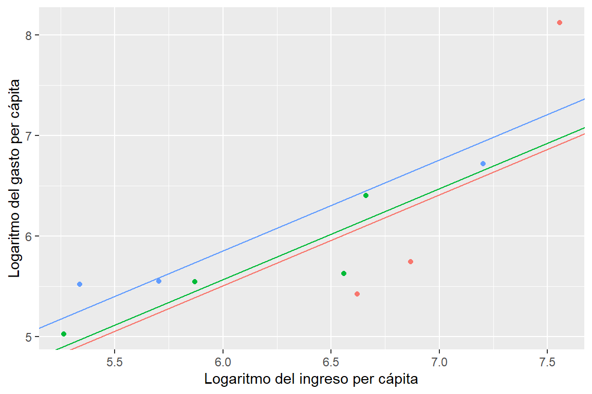
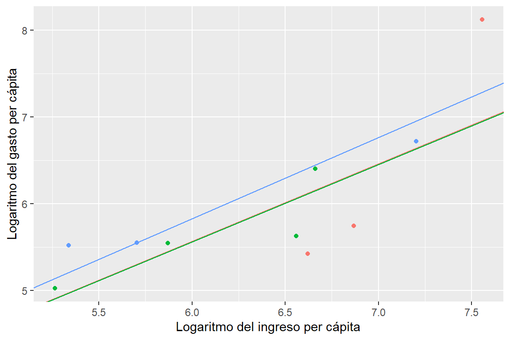
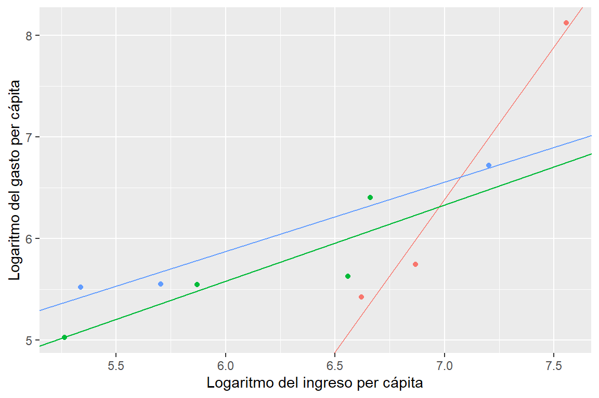
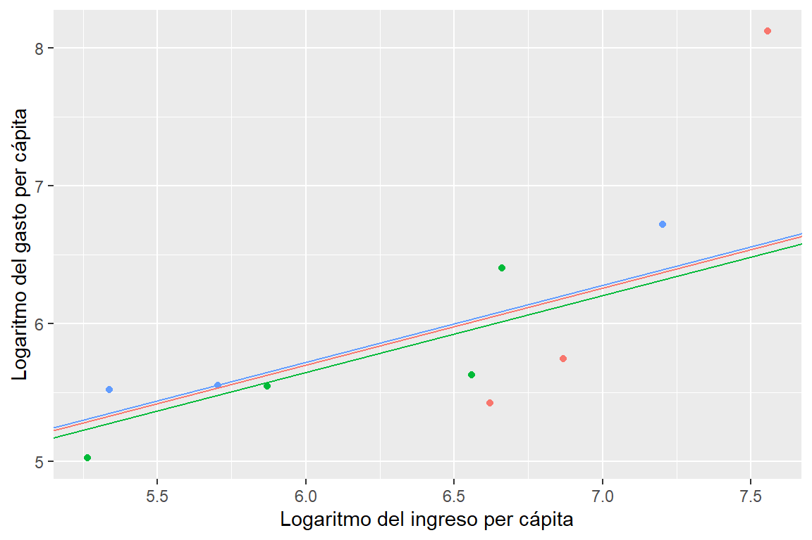
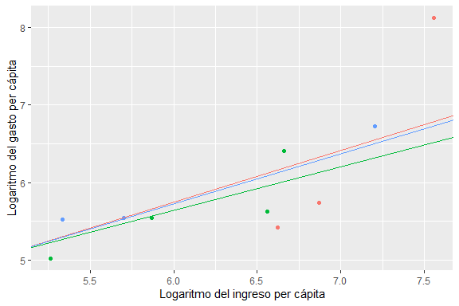
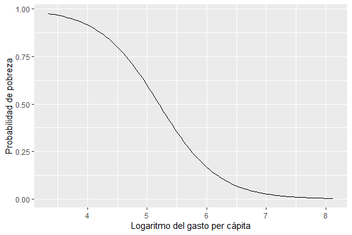
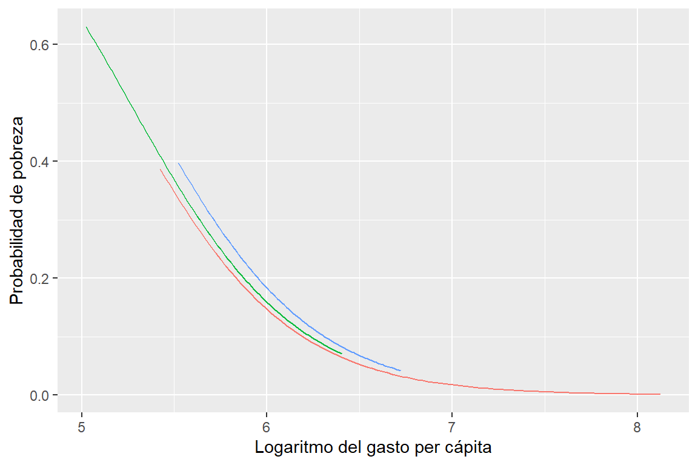
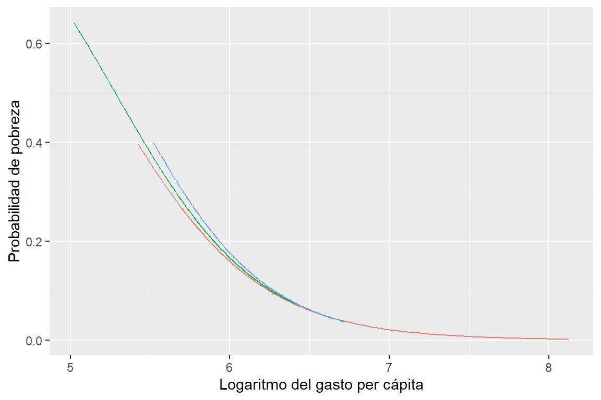

library(tidyverse)
library(lme4)
survey_data <- readRDS("../data/sample.rds") %>%
add_count(HHID, name = "household_size") %>%
filter(PersonID == "idPer01")
survey_data <- survey_data %>%
mutate(
poor = ifelse(Poverty != "NotPoor", 1, 0),
log_expenditure = log(Expenditure),
log_income = log(Income)
)7 Modelos multinivel
Los modelos multinivel, también conocidos como modelos jerárquicos, son una técnica estadística diseñada para el análisis de datos con estructura jerárquica, como los que provienen de encuestas de hogares, en donde las unidades de observación no son independientes entre sí (Goldstein 2011; Rabe-Hesketh y Skrondal 2012). Los individuos pertenecen a hogares, los hogares se ubican en áreas geográficas específicas (UPMs) y estas, a su vez, forman parte de unidades territoriales más amplias (estratos o dominios). Como consecuencia, las observaciones que comparten un mismo contexto suelen presentar características más similares entre sí que aquellas pertenecientes a contextos diferentes. Esta estructura de dependencia viola uno de los supuestos fundamentales de los modelos de regresión convencionales y puede conducir a estimaciones ineficientes e inferencias incorrectas.
A diferencia de los modelos de regresión convencionales, los modelos multinivel reconocen que las observaciones pueden estar agrupadas en distintos niveles y que cada uno de ellos puede contribuir a explicar la variabilidad observada. En consecuencia, permiten representar simultáneamente los efectos asociados a las características de las unidades de análisis y aquellos derivados del entorno o contexto en el que estas se encuentran. Esta formulación resulta especialmente útil cuando se busca estudiar fenómenos determinados tanto por factores individuales como por características de los hogares, comunidades o áreas geográficas.
Como explica Snijders y Bosker (2011), otra característica relevante de los modelos multinivel es que permiten cuantificar la proporción de la variabilidad asociada a cada nivel de agrupación presente en los datos. Mientras los efectos fijos resumen la relación promedio entre la variable respuesta y las covariables incluidas en el modelo, los efectos aleatorios representan las diferencias sistemáticas entre los grupos que no son explicadas por dichas covariables. Gracias a esta estructura, es posible modelar explícitamente la dependencia entre observaciones pertenecientes a un mismo grupo y obtener inferencias más adecuadas cuando los datos presentan organización jerárquica.
De acuerdo con Gelman y Hill (2006), el desarrollo teórico y metodológico de los modelos multinivel ha sido ampliamente documentado en la literatura de muestreo. Sus fundamentos conceptuales, estrategias de estimación y aplicaciones en contextos sociales y demográficos se encuentran consolidados en distintas referencias especializadas. Por otra parte, la comparación entre enfoques de estimación para modelos jerárquicos permite evaluar diferencias entre los métodos basados en máxima verosimilitud y los enfoques bayesianos (Browne y Draper 2006).
Según Merlo et al. (2006), en el ámbito de la epidemiología social, los modelos multinivel resultan útiles para estudiar fenómenos contextuales, mostrando cómo factores asociados al entorno pueden contribuir a explicar desigualdades en salud y otros resultados de interés poblacional. Además, como advierten Pfeffermann et al. (1998) y Carle (2009), es necesario distinguir entre la jerarquía sustantiva que se desea modelar y la estructura del diseño muestral: una UPM, un estrato de diseño o un dominio no constituye automáticamente un contexto intercambiable susceptible de representarse mediante un efecto aleatorio. Esa decisión requiere una justificación conceptual y suficiente información en cada grupo.
7.1 Motivación
Para iniciar este capítulo, se cargan las bibliotecas tidyverse para la manipulación de datos y la generación de gráficos, y lme4 para la estimación de modelos multinivel (Bates et al. 2015). Asimismo, se importa la base de datos que será utilizada a lo largo de los ejemplos. Los títulos matemáticos de algunas figuras se formatean con latex2exp, llamado de forma explícita en el código.
La base de análisis contiene 696 hogares, representados por una observación seleccionada mediante PersonID == "idPer01". El factor de expansión wk de la persona principal se utiliza como aproximación al peso del hogar, siguiendo la convención y las limitaciones descritas en la sección 3.1. Antes de seleccionar ese registro, se calcula el tamaño del hogar (household_size) con add_count(HHID), contando a todos sus integrantes. Las variables Income y Expenditure corresponden al ingreso y al gasto mensual per cápita del hogar; Age registra la edad de la persona principal. La selección deja un único registro por hogar. En esta base, el ingreso y el gasto son finitos y positivos, lo que permite obtener sus logaritmos naturales mediante log(). Los nombres y las categorías de las variables se conservan en inglés.
A partir de esta base, el capítulo desarrolla dos aplicaciones. La primera estudia la relación entre el logaritmo del gasto (log_expenditure) y el logaritmo del ingreso (log_income): la sección de motivación presenta la relación bivariada y los modelos lineales multinivel incorporan posteriormente la edad como control. La escala logarítmica permite interpretar la pendiente del ingreso como una elasticidad: un aumento del 1 % en el ingreso se asocia con un cambio aproximado del \(\beta\) % en el gasto típico, expresado mediante su media geométrica condicional, manteniendo constantes las demás covariables y el efecto del estrato. Además, comprime la escala de los valores elevados, aunque no garantiza el cumplimiento de los supuestos del modelo. La segunda aplicación utiliza modelos logísticos multinivel para estudiar la asociación entre el logaritmo del gasto y la condición de pobreza, controlando por el tamaño del hogar.
Con fines ilustrativos, los ajustes iniciales de esta sección utilizan los tres estratos con menor número de hogares. La base plot_data permite mostrar las limitaciones de los ajustes independientes en grupos pequeños y se utiliza después para visualizar los modelos multinivel. Estos últimos se estiman con los 696 hogares de todos los estratos, contenidos en survey_data. La selección de tres estratos sirve para ilustrar el método y no representa por sí sola a la población. El siguiente código computacional prepara la selección de hogares y estratos que se utilizará en las ilustraciones.
plot_data <- survey_data %>%
select(HHID, Stratum) %>%
distinct() %>%
group_by(Stratum) %>%
tally() %>%
arrange(n) %>%
select(-n) %>%
slice(1:3L) %>%
inner_join(survey_data, by = "Stratum") %>%
select(Income, Expenditure, log_income, log_expenditure,
household_size, Age, Stratum, Sex, Region, Zone, poor)Como punto de partida, se ajusta un modelo de regresión lineal convencional que relaciona el logaritmo del gasto per cápita de los hogares con el logaritmo de su ingreso per cápita, ignorando temporalmente la estructura jerárquica de los datos. Bajo esta especificación, se asume que todas las observaciones son independientes y que la relación entre los logaritmos del ingreso y del gasto es homogénea para todos los hogares, independientemente del estrato al que pertenezcan. La figura 7.1, obtenida con el siguiente código computacional, presenta la recta de regresión estimada junto con los datos observados.
simple_model <- lm(log_expenditure ~ log_income, data = plot_data)
ggplot(data = plot_data, aes(y = log_expenditure, x = log_income)) +
geom_point() +
labs(x = "Logaritmo del ingreso per cápita",
y = "Logaritmo del gasto per cápita") +
geom_smooth(
formula = y ~ x,
method = "lm",
se = FALSE
) +
theme(
legend.position = "none",
plot.title = element_text(hjust = 0.5)
)
Teniendo en cuenta los coeficientes de regresión estimados en la tabla 7.1, en este ajuste inicial un ingreso 1 % mayor se asocia con un gasto aproximadamente 0,906 % mayor. Como explica Finch et al. (2019), si bien este modelo resulta útil como referencia inicial, sus supuestos suelen ser poco realistas en el contexto de encuestas de hogares. En particular, la independencia entre observaciones puede verse comprometida cuando los hogares pertenecen a estratos que comparten características socioeconómicas, demográficas o geográficas similares. Asimismo, es posible que los niveles promedio del logaritmo del gasto difieran sistemáticamente entre estratos, aun cuando la relación entre los logaritmos del ingreso y del gasto sea semejante. Ignorar esta estructura jerárquica puede conducir a estimaciones incorrectas de los errores estándar y, en consecuencia, a inferencias estadísticas poco confiables.
Para incorporar gradualmente la estructura jerárquica de los datos, el siguiente código computacional ajusta un modelo que permite que cada estrato tenga su propio intercepto, mientras mantiene una pendiente común para todas las observaciones. Esta especificación resulta útil para visualizar cómo los niveles promedio del logaritmo del gasto pueden diferir entre estratos, aun cuando la relación entre los logaritmos del ingreso y del gasto se considere constante. Los coeficientes se utilizarán para trazar las rectas de regresión.
beta_1 <- coef(simple_model)[2]
model_coef <- plot_data %>%
group_by(Stratum) %>%
summarise(
beta_0 = mean(log_expenditure - beta_1 * log_income)
) %>%
mutate(beta_1 = beta_1)
common_slope_coefficients <- model_coefDe esta manera, el modelo introduce una primera fuente de heterogeneidad entre grupos y permite apreciar las limitaciones del modelo de regresión simple presentado anteriormente, el cual asumía una única recta de regresión para toda la población. La figura 7.2, obtenida con el siguiente código computacional, presenta las rectas de regresión con interceptos diferenciados por estrato.
ggplot(
data = plot_data,
aes(
y = log_expenditure,
x = log_income,
colour = Stratum
)
) +
geom_point() +
labs(x = "Logaritmo del ingreso per cápita",
y = "Logaritmo del gasto per cápita") +
geom_abline(
data = model_coef,
mapping = aes(
slope = beta_1,
intercept = beta_0,
colour = Stratum
)
) +
theme(
legend.position = "none",
plot.title = element_text(hjust = 0.5)
)
Como muestra la tabla 7.1, los interceptos difieren entre estratos, mientras que la elasticidad es común. Dentro de cada estrato, un ingreso 1 % mayor se asocia con un gasto aproximadamente 0,906 % mayor, manteniendo constantes las demás variables incluidas en el modelo. Así, los estratos pueden diferir en el nivel del gasto, pero comparten su respuesta proporcional al ingreso. Como siguiente paso, se considera una especificación alternativa en la que todos los estratos comparten un mismo intercepto en la escala logarítmica, pero se permite que la relación entre los logaritmos del ingreso y del gasto varíe entre estratos mediante pendientes específicas para cada uno de ellos.
beta_0 <- coef(simple_model)[1]
model_coef <- plot_data %>%
group_by(Stratum) %>%
summarise(
beta_1 = coef(lm(I(log_expenditure - beta_0) ~ 0 + log_income))[[1]]
) %>%
mutate(beta_0 = beta_0)
common_intercept_coefficients <- model_coefBajo esta especificación, las diferencias entre estratos se manifiestan en la intensidad de la asociación entre los logaritmos del ingreso y del gasto, manteniendo fijo el intercepto. La figura 7.3, obtenida con el siguiente código computacional, permite visualizar estas diferencias en las trayectorias de regresión estimadas para cada estrato.
ggplot(
data = plot_data,
aes(
y = log_expenditure,
x = log_income,
colour = Stratum
)
) +
geom_point() +
labs(x = "Logaritmo del ingreso per cápita",
y = "Logaritmo del gasto per cápita") +
geom_abline(
data = model_coef,
mapping = aes(
slope = beta_1,
intercept = beta_0,
colour = Stratum
)
) +
theme(
legend.position = "none",
plot.title = element_text(hjust = 0.5)
)
Con intercepto común y pendientes específicas, cada estrato tiene una elasticidad distinta, como se observa en la tabla 7.1. Las estimaciones van de 0,893 a 0,937. Por ejemplo, en el estrato idStrt039, un ingreso 1 % mayor se asocia con un gasto aproximadamente 0,894 % mayor, manteniendo constantes las demás variables incluidas en el modelo.
Finalmente, se considera la especificación más flexible de las presentadas hasta el momento, permitiendo que tanto el intercepto del logaritmo del gasto como la relación entre los logaritmos del ingreso y del gasto varíen entre estratos. El siguiente código computacional ajusta una regresión independiente para cada estrato, de modo que cada uno tenga su propio intercepto y pendiente.
model_coef <- plot_data %>%
group_by(Stratum) %>%
summarise(
beta_0 = coef(lm(log_expenditure ~ log_income))[1],
beta_1 = coef(lm(log_expenditure ~ log_income))[2]
)
separate_coefficients <- model_coefEsta formulación permite capturar simultáneamente diferencias en los niveles del logaritmo del gasto y en la intensidad de su asociación con el logaritmo del ingreso. La figura 7.4, obtenida con el siguiente código computacional, muestra las rectas ajustadas para cada estrato bajo esta especificación.
ggplot(
data = plot_data,
aes(
y = log_expenditure,
x = log_income,
colour = Stratum
)
) +
geom_point() +
labs(x = "Logaritmo del ingreso per cápita",
y = "Logaritmo del gasto per cápita") +
geom_abline(
data = model_coef,
mapping = aes(
slope = beta_1,
intercept = beta_0,
colour = Stratum
)
) +
theme(
legend.position = "none",
plot.title = element_text(hjust = 0.5)
)
Al estimar ambos coeficientes por separado para cada estrato, las elasticidades van de 0,684 a 3,008, según la tabla 7.1. En el estrato idStrt039, un ingreso 1 % mayor se asocia con un gasto aproximadamente 3,008 % mayor, manteniendo constantes las demás variables incluidas en el modelo. Estas estimaciones corresponden a ajustes independientes en grupos pequeños y no incorporan todavía el control por edad.
Aunque esta última especificación ofrece una representación más flexible de los datos y permite capturar las particularidades de cada estrato, presenta una limitación importante: los parámetros se estiman de manera completamente independiente para cada grupo. Como consecuencia, no se aprovecha la información compartida entre estratos que podrían presentar patrones similares, lo que puede generar estimaciones inestables, especialmente en aquellos grupos con un número reducido de observaciones. Los modelos multinivel superan esta dificultad mediante un mecanismo conocido como encogimiento (shrinkage), en el cual las estimaciones específicas de cada grupo se obtienen combinando la información propia del grupo con la información proveniente del conjunto de la población (Gelman y Hill 2006; Goldstein 2011). De esta manera, se logra un equilibrio entre la representación de las diferencias entre estratos y la eficiencia estadística de las estimaciones.
La tabla 7.1 reúne los coeficientes de los cuatro ajustes en el orden en que se han presentado. Como el ingreso y el gasto están en logaritmos, la pendiente es también la elasticidad y se muestra en una sola columna. El intercepto no tiene esa interpretación. El siguiente código computacional combina los coeficientes guardados durante los ajustes para facilitar su comparación.
motivation_models_table <- bind_rows(
"Regresión simple" = tibble(
Stratum = "Tres estratos juntos",
beta_0 = unname(coef(simple_model)[1]),
beta_1 = unname(coef(simple_model)[2])
),
"Interceptos específicos y pendiente común" = common_slope_coefficients,
"Intercepto común y pendientes específicas" = common_intercept_coefficients,
"Interceptos y pendientes específicos" = separate_coefficients,
.id = "model"
) %>%
select(model, Stratum, beta_0, beta_1)
motivation_models_table| Modelo | Estrato | Intercepto | Pendiente (elasticidad) |
|---|---|---|---|
| Regresión simple | Tres estratos juntos | 0.205 | 0.906 |
| Interceptos específicos y pendiente común | idStrt039 | 0.077 | 0.906 |
| Interceptos específicos y pendiente común | idStrt046 | 0.135 | 0.906 |
| Interceptos específicos y pendiente común | idStrt057 | 0.424 | 0.906 |
| Intercepto común y pendientes específicas | idStrt039 | 0.205 | 0.894 |
| Intercepto común y pendientes específicas | idStrt046 | 0.205 | 0.893 |
| Intercepto común y pendientes específicas | idStrt057 | 0.205 | 0.937 |
| Interceptos y pendientes específicos | idStrt039 | -14.669 | 3.008 |
| Interceptos y pendientes específicos | idStrt046 | 1.073 | 0.752 |
| Interceptos y pendientes específicos | idStrt057 | 1.770 | 0.684 |
7.2 Incorporación de pesos de muestreo en modelos multinivel
En el contexto de los modelos multinivel con datos provenientes de encuestas, una dificultad adicional radica en la incorporación coherente de los pesos de muestreo a través de los distintos niveles de la jerarquía. La estructura agrupada de los datos implica que las observaciones no son independientes, por lo que la función de log-verosimilitud no puede descomponerse como una suma simple de contribuciones individuales. En su lugar, es necesario considerar explícitamente la dependencia entre los distintos niveles del diseño muestral para lograr inferencias adecuadas.
La incorporación de los pesos de muestreo en modelos multinivel ha recibido una atención considerable en la literatura, especialmente cuando el diseño de la encuesta puede ser informativo. En estos casos, la probabilidad de inclusión de las unidades puede estar relacionada con las variables de interés, incluso después de condicionar por las covariables incluidas en el modelo. Ignorar esta característica del diseño puede afectar la estimación de los parámetros y, en consecuencia, la validez de las inferencias obtenidas a partir del modelo (Pfeffermann et al. 1998; Asparouhov 2006).
Una de las principales alternativas consiste en extender los métodos de estimación habituales mediante procedimientos de pseudo-máxima verosimilitud, incorporando los pesos de muestreo en la función objetivo utilizada para estimar los parámetros. Como se ha mencionado a lo largo de este documento, dentro de este enfoque se han propuesto diferentes formas de ponderar las contribuciones de las unidades y de los conglomerados a la función de verosimilitud (Rabe-Hesketh y Skrondal 2006; Carle 2009). Estas estrategias buscan preservar, en la medida de lo posible, las ventajas de la modelación jerárquica al tiempo que incorporan información procedente del diseño muestral.
También se han desarrollado procedimientos de estimación basados en algoritmos iterativos, incluidos enfoques que utilizan variantes del algoritmo EM para incorporar las ponderaciones dentro de la estimación de modelos jerárquicos (Cai 2013). En conjunto, estos trabajos muestran que no existe una única manera de incorporar los pesos de muestreo en modelos multinivel. La elección del procedimiento depende, entre otros factores, de la estructura del diseño muestral, del nivel o los niveles en los que se produce la selección informativa y del objetivo inferencial del análisis. Por esta razón, más que considerar la ponderación como una corrección mecánica, resulta conveniente evaluar explícitamente las características del diseño y el posible carácter informativo del mecanismo de selección antes de definir la estrategia de estimación.
Como explica Pfeffermann (2011), para ajustar modelos multinivel con datos provenientes de encuestas complejas, una alternativa consiste en utilizar el enfoque de pesos q-weighted. La idea central de este método es eliminar de los pesos muestrales la componente sistemática explicada por las covariables incluidas en el modelo, de modo que los pesos resultantes conserven únicamente la parte residual atribuible al mecanismo de selección.
No obstante, este no es el único enfoque disponible para la estimación de modelos multinivel con datos de encuestas complejas y tampoco sustituye el uso de pesos condicionales o de pesos escalados en cada etapa del diseño, requeridos por algunos métodos de pseudo-verosimilitud multinivel. El procedimiento para construir los pesos q-weighted se resume en los siguientes pasos:
Ajustar un modelo de regresión para los factores de expansión finales de la encuesta, utilizando como variables explicativas el mismo conjunto de covariables que será empleado en el modelo multinivel. Siendo \(w_k\) el factor de expansión original de la unidad \(k\) y \(\mathbf{x}_k\) el vector de covariables. Entonces se ajusta el modelo
\[ w_k = f(\mathbf{x}_k, \boldsymbol{\beta}) + \varepsilon_k, \]
donde \(f(\cdot)\) representa la relación funcional entre los pesos \(w_k\) y las covariables \(\mathbf{x}_k\), a través de los coeficientes \(\boldsymbol{\beta}\).
Obtener los valores predichos del modelo para cada unidad de observación, de tal forma que:
\[ \hat{w}_k = f(\mathbf{x}_k, \hat{\boldsymbol{\beta}}). \]
Estos valores representan la componente de los factores de expansión explicada por las covariables incluidas en el modelo.
Construir los pesos q-weighted dividiendo los factores de expansión originales por la estimación de su esperanza condicional en la muestra,
\[ q_k = \frac{w_k}{\widehat{E}_s(w_k\mid\mathbf{x}_k)}. \tag{7.1}\]
De esta forma, los nuevos pesos reflejan la variación residual de los factores de expansión una vez controlado el efecto de las covariables.
En la implementación ilustrativa de este capítulo, pasar los pesos ajustados \(q_k\) al argumento
weightsdelmer()yglmer(). Este paso no construye un objeto de diseño muestral ni incorpora por sí solo los pesos de selección por etapa o la estimación de varianza bajo el diseño complejo.
El siguiente código implementa el procedimiento de construcción de pesos q-weighted y fija reference_age en la mediana de la edad para representar los modelos lineales a una edad común. En primer lugar, ajusta un modelo de regresión lineal que explica los factores de expansión originales a partir del logaritmo del ingreso y la edad de la persona principal. De esta forma, los pesos resultantes conservan únicamente la componente de variación no explicada por las covariables incluidas en el modelo multinivel.
mod_qw <- lm(wk ~ log_income + Age, data = survey_data)
predicted_weights <- predict(mod_qw)
survey_data$qk <- survey_data$wk / predicted_weights
reference_age <- median(survey_data$Age)El ajuste lineal de los factores de expansión según el logaritmo del ingreso y la edad constituye una aproximación para construir los pesos q-weighted. Para construir estos pesos, las predicciones deben ser finitas y estrictamente positivas. También debe evaluarse si el modelo representa adecuadamente \(E_s(w_k\mid\mathbf{x}_k)\), pues una regresión lineal de los pesos puede producir predicciones no válidas. Además, el vector qk no necesariamente permite reconstruir por sí solo los pesos condicionales de cada etapa que requiere un modelo multinivel ponderado.
Para representar los modelos lineales de la siguiente sección, se utiliza reference_age como una edad común de la persona principal del hogar. Su valor se obtiene con median(survey_data$Age) y corresponde a 47 años. Al mantener fija la edad en las rectas de regresión, las comparaciones entre estratos describen la relación entre ingreso y gasto sin incorporar diferencias de edad entre los hogares representados. Esta referencia se aplica únicamente a la visualización: los modelos se estiman utilizando las edades observadas de todos los hogares.
7.3 Modelo lineal multinivel
Los modelos multinivel más utilizados en la práctica corresponden a extensiones del modelo lineal clásico para datos con estructura jerárquica. En su formulación básica, estos modelos asumen que la variable respuesta es continua y sigue una distribución normal condicional a los efectos fijos y aleatorios incluidos en el modelo. Asimismo, se supone que los efectos aleatorios y los errores residuales son independientes entre sí y se distribuyen normalmente con media cero y varianzas constantes.
En esta sección se modela el logaritmo del gasto mensual per cápita del hogar, representado por \(y_{kj}\), donde \(k\) identifica al hogar y \(j\) al estrato. Los modelos con covariables incorporan el logaritmo del ingreso per cápita, representado por \(x_{kj}\), y la edad de la persona principal como control. Por ello, las predicciones se obtienen inicialmente en la escala logarítmica. Al aplicarles la función exponencial, se regresa a las unidades monetarias del gasto, pero el resultado representa una media geométrica: una medida del gasto típico para hogares con esas características y ese efecto de estrato. Para estimar el gasto medio aritmético se requiere, además, considerar la variabilidad residual del modelo.
7.3.1 Modelo nulo
En el análisis de regresión multinivel, se distinguen dos tipos de parámetros: los coeficientes de regresión, conocidos como parámetros fijos, y los componentes de varianza asociados a los efectos aleatorios (Goldstein 2011; Rabe-Hesketh y Skrondal 2012, e). Una etapa inicial fundamental en este tipo de análisis consiste en descomponer la variabilidad total de la variable dependiente en los distintos niveles de la estructura jerárquica. En el contexto del ejemplo anterior, esta descomposición permite separar la variación del logaritmo del gasto en una componente atribuible a diferencias dentro de los estratos y otra asociada a diferencias entre estratos.
Según Snijders y Bosker (2011), el punto de partida para esta descomposición es el denominado modelo nulo, el cual no incorpora variables explicativas y se expresa como
\[ y_{kj} = \beta_{0j} + \epsilon_{kj} \tag{7.2}\]
En donde \(y_{kj}\) denota el valor observado del logaritmo del gasto para la unidad \(k\) en el estrato \(j\). El término \(\beta_{0j}\) representa el intercepto específico de cada estrato, capturando las diferencias en los niveles promedio de la variable entre grupos. Finalmente, \(\epsilon_{kj}\) corresponde al error a nivel de unidad, el cual recoge la variabilidad no explicada dentro de cada estrato y se asume con media cero y varianza constante condicional al grupo.
A su vez, el intercepto por estrato puede descomponerse en una parte común a todos los estratos y una desviación específica de cada uno de ellos, de la siguiente forma:
\[ \beta_{0j} = \gamma_{00} + \tau_{0j} \]
donde \(\gamma_{00}\) representa el intercepto promedio global y \(\tau_{0j}\) es el efecto aleatorio para el intercepto que captura la desviación del estrato \(j\), permitiendo modelar explícitamente la heterogeneidad entre estratos. Además, los componentes aleatorios del modelo se asumen distribuidos normalmente con media cero y varianzas específicas para cada nivel de la jerarquía. En particular, el efecto aleatorio asociado al intercepto por estrato cumple
\[ \tau_{0j} \sim N\left(0, \sigma_{\tau}^{2}\right), \]
lo que implica que las desviaciones de cada estrato respecto al intercepto global se distribuyen alrededor de cero, con una variabilidad determinada por \(\sigma_{\tau}^{2}\). De manera análoga, el término de error a nivel de unidad sigue la distribución
\[ \epsilon_{kj} \sim N\left(0, \sigma_{\epsilon}^{2}\right), \]
Donde \(\sigma_{\epsilon}^{2}\) representa la variabilidad residual dentro de los estratos. A partir de este modelo se define el coeficiente de correlación intraclase (ICC, por sus siglas en inglés), que cuantifica la proporción de la varianza total explicada por las diferencias entre estratos. Su definición se presenta a continuación:
\[ \rho = \frac{\sigma_{\tau}^{2}}{\sigma_{\tau}^{2} + \sigma_{\epsilon}^{2}} \tag{7.3}\]
De acuerdo con Bates et al. (2015), un valor elevado de ICC indica que una proporción importante de la variabilidad total de la variable de interés se debe a diferencias entre estratos, lo que sugiere la presencia de heterogeneidad relevante entre grupos y la necesidad de incorporar explícitamente dicha estructura en el modelo. En contraste, un ICC bajo implica que la variabilidad se concentra principalmente dentro de los estratos, los cuales presentan una mayor homogeneidad relativa entre sí.
Siguiendo con el análisis de la encuesta de ejemplo, cuando la variable de interés es el logaritmo del gasto, el modelo nulo constituye el punto de partida para cuantificar qué proporción de la variabilidad total se debe a diferencias entre estratos y qué proporción corresponde a diferencias entre hogares dentro de un mismo estrato.
La estimación de modelos multinivel en R se realiza mediante el paquete lme4. En particular, la función lmer() permite especificar los efectos aleatorios mediante expresiones de la forma (efecto | grupo). En este contexto, la expresión (1 | Stratum) indica que el modelo incluye un intercepto aleatorio para cada estrato. El valor 1 representa el intercepto del modelo, mientras que Stratum identifica la variable de agrupación.
Como advierte Carle (2009), en lme4, el argumento weights representa pesos previos que modifican la contribución residual, pero no implementa por sí solo la pseudo-verosimilitud multinivel con pesos de diseño por etapa ni la estimación de varianza del diseño. Por tanto, los modelos ponderados con qk que siguen deben interpretarse como una ilustración modelada, no como una solución general para inferencia de encuestas complejas; para ese propósito se requieren pesos escalados y software que los incorpore expresamente en la estimación multinivel. El siguiente código computacional ajusta el modelo nulo con intercepto aleatorio por estrato.
mod_null <- lmer(
log_expenditure ~ (1 | Stratum),
data = survey_data,
weights = qk
)Las tablas de coeficientes por estrato presentan las estimaciones condicionales del modelo. Cada fila identifica el estrato y el parámetro correspondiente. Los estadísticos de prueba y los valores-p de los efectos fijos corresponden a otro nivel de inferencia. El siguiente código computacional extrae los interceptos estimados por estrato y los organiza para su presentación.
coef_mod_null <- coef(mod_null)$Stratum
null_model_intercepts_table <- coef_mod_null %>%
tibble::rownames_to_column("stratum") %>%
slice(1:5L) %>%
transmute(stratum, intercept = .data[["(Intercept)"]])
null_model_intercepts_table| Estrato | Intercepto (beta) |
|---|---|
| idStrt001 | 5.53 |
| idStrt002 | 5.57 |
| idStrt003 | 5.55 |
| idStrt004 | 5.97 |
| idStrt005 | 5.91 |
La tabla 7.2 presenta los interceptos estimados para los primeros 5 estratos a partir del modelo nulo. Por ejemplo, el intercepto del estrato idStrt001 es 5,527 y representa el valor esperado del logaritmo del gasto mensual per cápita en ese estrato. Como este modelo no incluye el ingreso ni otras covariables, no estima elasticidades. Su función es describir la variación del logaritmo del gasto entre estratos antes de incorporar los predictores.
El siguiente código computacional calcula la correlación intraclase a partir de los componentes de varianza del modelo nulo mediante icc() del paquete performance (Lüdecke et al. 2026). Este indicador cuantifica la proporción de la variabilidad total del logaritmo del gasto que puede atribuirse a diferencias entre estratos, constituyendo una medida de la dependencia existente entre observaciones pertenecientes a un mismo grupo. Los resultados obtenidos se presentan en la tabla 7.3.
null_model_icc_table <- performance::icc(mod_null) %>%
as.data.frame()
null_model_icc_table| CCI ajustado | CCI sin ajustar | Opcional |
|---|---|---|
| 0.203 | 0.203 | FALSE |
La correlación intraclase estimada es de 0,203. Bajo esta descomposición del modelo, aproximadamente el 20 % de la variabilidad se atribuye al componente entre estratos. El modelo nulo no incluye predictores, por lo que el valor esperado del logaritmo del gasto per cápita es constante dentro de cada estrato e igual a su intercepto estimado.
7.3.2 Modelo con intercepto aleatorio
De acuerdo con Goldstein (2011) y Rabe-Hesketh y Skrondal (2012), el modelo multinivel más simple que incorpora covariables corresponde al modelo de intercepto aleatorio. En esta especificación, se asume que los efectos de las variables explicativas son comunes a todos los estratos, mientras que el nivel promedio de la variable respuesta puede variar entre ellos. El modelo se expresa como
\[ y_{kj} = \beta_{0j} + \mathbf{x}_{kj}\boldsymbol{\beta} + \epsilon_{kj} \tag{7.4}\]
En donde \(y_{kj}\) representa el valor observado de la variable respuesta para la unidad \(k\) perteneciente al estrato \(j\), \(\mathbf{x}_{kj}\) es el vector de covariables asociado a dicha unidad, \(\boldsymbol{\beta}\) es el vector de coeficientes de regresión comunes a todos los estratos y \(\epsilon_{kj}\) corresponde al error aleatorio a nivel de unidad.
Al igual que en el modelo nulo, el intercepto se modela como \(\beta_{0j} = \gamma_{00} + \tau_{0j}\); en donde \(\gamma_{00}\) representa el intercepto promedio global y \(\tau_{0j}\) es el efecto aleatorio asociado al estrato \(j\), que mide la desviación de dicho estrato respecto al promedio general.
Los componentes aleatorios del modelo se asumen independientes y normalmente distribuidos, de manera que \(\tau_{0j} \sim N(0,\sigma_{\tau}^{2})\) y \(\epsilon_{kj} \sim N(0,\sigma_{\epsilon}^{2})\). Bajo estas condiciones, la variabilidad total de la variable respuesta puede descomponerse en una componente entre estratos, cuantificada por \(\sigma_{\tau}^{2}\), y una componente dentro de los estratos, representada por \(\sigma_{\epsilon}^{2}\).
El siguiente código ajusta un modelo multinivel de intercepto aleatorio, en donde el logaritmo del gasto per cápita (log_expenditure) se explica a partir del logaritmo del ingreso per cápita (log_income), controlando por la edad (Age) como efecto fijo común e incorporando además un efecto aleatorio asociado al estrato (Stratum) y utilizando los pesos q-weighted almacenados en la variable qk. Una vez ajustado el modelo, se estima la correlación intraclase (ICC) a partir de los componentes de varianza estimados.
random_intercept_model <- lmer(
log_expenditure ~ log_income + Age + (1 | Stratum),
data = survey_data,
weights = qk
)
random_intercept_model_icc <- performance::icc(random_intercept_model)
random_intercept_model_iccUna vez controlados el logaritmo del ingreso per cápita y la edad, el ICC ajustado es 0,075. Esto indica que alrededor del 7,5 % de la variabilidad residual corresponde a diferencias entre estratos; el resto se observa entre hogares del mismo estrato. El valor es menor que en el modelo nulo, que no incluye covariables. Sin embargo, el ICC por sí solo no determina si conviene usar un modelo multinivel: también importa si los estratos son grupos adecuados para el análisis y qué muestran los diagnósticos del modelo. Los coeficientes estimados por estrato se presentan en la tabla 7.4.
La elasticidad común estimada del gasto respecto al ingreso es 0,559. Dentro de un mismo estrato y manteniendo constante la edad de la persona principal, un aumento del 1 % en el ingreso per cápita se asocia con un aumento aproximado del 0,559 % en el gasto per cápita típico, expresado mediante su media geométrica condicional. Para un aumento del 10 % en el ingreso, el cambio se calcula como \(100[(1+0,10)^{\hat{\beta}}-1]\), donde \(\hat{\beta}\) es la elasticidad estimada. En este modelo, el resultado es 5,47 %. Esta interpretación describe una asociación, sin establecer causalidad. Los interceptos corresponden a un ingreso de una unidad monetaria y una edad de cero años; estos valores están fuera del rango observado, por lo que no deben interpretarse como el gasto habitual de los hogares.
El coeficiente de la edad es una semielasticidad y su estimación es -0,0017. Para iguales ingreso per cápita y estrato, un año adicional de edad se asocia con un cambio del -0,17 % en la media geométrica condicional del gasto. El signo negativo describe una asociación ajustada, sin implicar causalidad. El siguiente código computacional presenta en columnas separadas el intercepto, la elasticidad del ingreso y el coeficiente de edad para cada estrato.
random_intercept_coefficients_table <- coef(random_intercept_model)$Stratum %>%
tibble::rownames_to_column("stratum") %>%
slice(1:5L) %>%
transmute(
stratum,
intercept = .data[["(Intercept)"]],
income_elasticity = log_income,
age_coefficient = Age
)
random_intercept_coefficients_table| Estrato | Intercepto | Elasticidad del ingreso | Coeficiente de edad |
|---|---|---|---|
| idStrt001 | 2.34 | 0.559 | -0.002 |
| idStrt002 | 2.34 | 0.559 | -0.002 |
| idStrt003 | 2.33 | 0.559 | -0.002 |
| idStrt004 | 2.40 | 0.559 | -0.002 |
| idStrt005 | 2.49 | 0.559 | -0.002 |
En la tabla 7.4, el coeficiente de log_income se repite en los cinco estratos porque la elasticidad es común. Las diferencias de intercepto desplazan las rectas, pero no modifican la respuesta proporcional del gasto ante un cambio porcentual en el ingreso. Los interceptos no son elasticidades y el coeficiente de Age es una semielasticidad, dado que la edad se incorpora en años.
Para visualizar los resultados a una edad común en la submuestra de tres estratos definida anteriormente, el siguiente código computacional selecciona los coeficientes correspondientes del modelo ajustado.
estimated_coef <- inner_join(
coef(random_intercept_model)$Stratum %>%
tibble::rownames_to_column(var = "Stratum"),
plot_data %>%
select(Stratum) %>%
distinct()
)Las rectas se representan para una persona principal de 47 años, sumando al intercepto el producto del coeficiente de Age por reference_age. Los puntos muestran los datos observados de hogares con distintas edades, por lo que no son observaciones ajustadas a esa edad común. La figura 7.5, obtenida con el siguiente código computacional, muestra las rectas de regresión estimadas para cada estrato bajo el modelo de intercepto aleatorio. Se observa que las rectas comparten una misma pendiente, reflejando la asociación común entre el logaritmo del ingreso y el del gasto, pero difieren en su posición vertical debido a los interceptos específicos estimados para cada estrato.
ggplot(
data = plot_data,
aes(
y = log_expenditure,
x = log_income,
colour = Stratum
)
) +
geom_point() +
labs(x = "Logaritmo del ingreso per cápita",
y = "Logaritmo del gasto per cápita") +
geom_abline(
data = estimated_coef,
mapping = aes(
slope = log_income,
intercept = `(Intercept)` + Age * reference_age,
colour = Stratum
)
) +
theme(
legend.position = "none",
plot.title = element_text(hjust = 0.5)
)
7.3.3 Modelo con intercepto y pendiente aleatoria
De acuerdo con Goldstein (2011) y Snijders y Bosker (2011), una extensión natural del modelo anterior es el modelo de intercepto y pendiente aleatorios. En esta especificación, no sólo se permite que el nivel promedio de la variable respuesta varíe entre estratos, sino también que el efecto de una o más covariables difiera entre grupos. De esta manera, cada estrato puede tener su propia recta de regresión, tanto en términos de intercepto como de pendiente. El modelo puede expresarse como
\[ y_{kj} = \beta_{0j} + x_{kj}\beta_{1j} + \mathbf{z}_{kj}\boldsymbol{\beta} + \epsilon_{kj}, \tag{7.5}\]
donde \(y_{kj}\) representa el valor observado de la variable respuesta para la unidad \(k\) perteneciente al estrato \(j\), \(x_{kj}\) corresponde a la covariable cuya pendiente se permite variar entre estratos, \(\mathbf{z}_{kj}\) contiene las covariables con efectos fijos comunes a todos los grupos, y \(\epsilon_{kj}\) es el término de error a nivel de unidad. En este modelo, tanto el intercepto como la pendiente asociada a \(x_{kj}\) se consideran aleatorios y se descomponen de la siguiente forma:
\[ \beta_{0j} = \gamma_{00} + \tau_{0j}, \qquad \beta_{1j} = \gamma_{10} + \tau_{1j} \]
donde \(\gamma_{00}\) y \(\gamma_{10}\) representan, respectivamente, el intercepto y la pendiente promedio en la población, mientras que \(\tau_{0j}\) y \(\tau_{1j}\) capturan las desviaciones específicas del estrato \(j\) respecto a dichos promedios. Estos efectos aleatorios se asumen normalmente distribuidos como se indica a continuación:
\[ \begin{pmatrix} \tau_{0j} \\ \tau_{1j} \end{pmatrix} \sim N\left( \begin{pmatrix} 0 \\ 0 \end{pmatrix}, \begin{pmatrix} \sigma_{\tau_0}^2 & \sigma_{\tau_{01}} \\ \sigma_{\tau_{01}} & \sigma_{\tau_1}^2 \end{pmatrix} \right), \]
mientras que el error a nivel de unidad satisface \(\epsilon_{kj} \sim N(0,\sigma_{\epsilon}^{2})\). En consecuencia, el modelo permite cuantificar no sólo la variabilidad entre estratos en los niveles promedio de la variable respuesta, sino también la heterogeneidad existente en el efecto de la covariable cuyo coeficiente se modela como aleatorio.
A continuación se ajusta un modelo multinivel con intercepto y pendiente aleatorios. El logaritmo del gasto per cápita (log_expenditure) se modela en función del logaritmo del ingreso per cápita (log_income), controlando por Age mediante un efecto fijo común. Tanto el intercepto como la pendiente del logaritmo del ingreso pueden variar entre estratos (Stratum). La estimación utiliza los pesos q-weighted almacenados en qk.
Nótese que en la especificación del código se incluye simultáneamente efectos fijos y efectos aleatorios para el intercepto y la variable log_income. Los términos ubicados fuera del paréntesis, 1 + log_income + Age, corresponden a los efectos fijos del modelo y permiten estimar el intercepto promedio global, la pendiente promedio global asociada al logaritmo del ingreso y el coeficiente común de la edad. Por su parte, la expresión (1 + log_income | Stratum) incorpora las desviaciones específicas de cada estrato respecto a dichos promedios. La inclusión explícita de los efectos fijos es fundamental, ya que los efectos aleatorios se interpretan como desviaciones alrededor de una media poblacional.
random_slope_model <- lmer(
log_expenditure ~ 1 + log_income + Age + (1 + log_income | Stratum),
data = survey_data,
weights = qk
)
random_slope_modelLa elasticidad correspondiente al componente fijo de la pendiente es 0,561, mientras que las pendientes específicas de los estratos describen elasticidades condicionales del gasto respecto al ingreso, manteniendo constante la edad.
El coeficiente común de Age en este modelo es -0,0016; a iguales ingreso y estrato, un año adicional de edad se asocia con un cambio del -0,16 % en la media geométrica del gasto. Como la pendiente del ingreso varía entre estratos, la variabilidad entre ellos también depende del ingreso y no se resume en una única correlación intraclase. El siguiente código computacional presenta en columnas separadas el intercepto, la elasticidad del ingreso y el coeficiente de edad para cada uno de los primeros cinco estratos, como se muestra en la tabla 7.5.
random_slope_coefficients_table <- coef(random_slope_model)$Stratum %>%
tibble::rownames_to_column("stratum") %>%
slice(1:5L) %>%
transmute(
stratum,
intercept = .data[["(Intercept)"]],
income_elasticity = log_income,
age_coefficient = Age
)
random_slope_coefficients_table| Estrato | Intercepto | Elasticidad del ingreso | Coeficiente de edad |
|---|---|---|---|
| idStrt001 | 2.33 | 0.566 | -0.002 |
| idStrt002 | 2.50 | 0.532 | -0.002 |
| idStrt003 | 2.55 | 0.522 | -0.002 |
| idStrt004 | 2.16 | 0.600 | -0.002 |
| idStrt005 | 1.81 | 0.670 | -0.002 |
En la tabla 7.5, cada fila corresponde a un estrato y permite comparar directamente sus tres coeficientes. La elasticidad del ingreso es específica de cada estrato: \(\beta_{1j}=\gamma_{10}+\tau_{1j}\) combina la pendiente fija con la desviación aleatoria. Por ejemplo, para el estrato idStrt001, la elasticidad estimada es 0,566. Dentro de ese estrato y a igual edad, un ingreso 1 % mayor se asocia con un gasto aproximadamente 0,566 % mayor, expresado como media geométrica condicional. Entre todos los estratos, las elasticidades estimadas van de 0,213 a 0,826.
El siguiente código computacional selecciona los coeficientes del modelo con pendiente aleatoria correspondientes a los tres estratos de la submuestra utilizada en las ilustraciones.
estimated_coef <- inner_join(
coef(random_slope_model)$Stratum %>%
tibble::rownames_to_column(var = "Stratum"),
plot_data %>%
select(Stratum) %>%
distinct()
)Las rectas se calculan manteniendo la edad de la persona principal en 47 años; los puntos corresponden a los datos observados sin ajuste por edad. La figura 7.6, obtenida con el siguiente código computacional, presenta las rectas de regresión estimadas para cada estrato bajo el modelo de intercepto y pendiente aleatorios. A diferencia del modelo de intercepto aleatorio, en este caso las rectas pueden diferir tanto en su posición vertical como en su inclinación, de acuerdo con las variaciones estimadas para cada estrato.
ggplot(
data = plot_data,
aes(
y = log_expenditure,
x = log_income,
colour = Stratum
)
) +
geom_point() +
labs(x = "Logaritmo del ingreso per cápita",
y = "Logaritmo del gasto per cápita") +
geom_abline(
data = estimated_coef,
mapping = aes(
slope = log_income,
intercept = `(Intercept)` + Age * reference_age,
colour = Stratum
)
) +
theme(
legend.position = "none",
plot.title = element_text(hjust = 0.5)
)
7.4 Modelo logístico multinivel
En las secciones anteriores se modeló el gasto per cápita como una variable continua. Aquí el interés pasa a un resultado binario: la condición de pobreza del hogar. Un modelo logístico multinivel permite relacionar la probabilidad de pobreza con características del hogar y, a la vez, representar las diferencias entre estratos mediante efectos aleatorios. Para estimar estos modelos se preparan primero los pesos que se usarán en el análisis.
Para los modelos logísticos de esta sección se reconstruyen los pesos q-weighted utilizando el logaritmo del gasto per cápita y el tamaño del hogar como predictores, de acuerdo con su especificación. El siguiente código computacional realiza ese ajuste y calcula los pesos como el cociente entre wk y sus valores predichos, que deben ser finitos y positivos. También define reference_household_size como la mediana del tamaño del hogar, que se mantendrá fija al representar las probabilidades predichas.
logistic_weight_model <- lm(wk ~ log_expenditure + household_size, data = survey_data)
logistic_predicted_weights <- predict(logistic_weight_model)
survey_data$qk <- survey_data$wk / logistic_predicted_weights
reference_household_size <- median(survey_data$household_size)De acuerdo con Snijders y Bosker (2011) y Rabe-Hesketh y Skrondal (2012), los modelos logísticos multinivel constituyen una extensión de los modelos multinivel para variables continuas al caso en que la variable respuesta es dicotómica. En lugar de modelar directamente el valor esperado de una variable continua, estos modelos estiman la probabilidad de ocurrencia de un evento, incorporando simultáneamente covariables individuales y efectos aleatorios asociados a los grupos de pertenencia. En el contexto de encuestas de hogares, esta formulación es especialmente útil cuando se analizan resultados binarios, como encontrarse o no en condición de pobreza, acceder o no a un servicio, participar o no en el mercado laboral, o presentar determinada característica sociodemográfica.
Al igual que en los modelos multinivel para variables continuas, el punto de partida consiste en reconocer que las unidades de observación no son independientes cuando pertenecen a un mismo grupo sustantivo. Como se advirtió al inicio, un estrato, conglomerado o dominio del diseño solo debe emplearse como nivel aleatorio cuando corresponda al contexto que se desea modelar y el supuesto de efectos intercambiables sea defendible. Sin embargo, en el caso logístico la respuesta no se representa mediante una distribución normal con un error residual aditivo, sino mediante una distribución Bernoulli condicional a la probabilidad de ocurrencia del evento. Esta probabilidad se vincula con los predictores a través de la función logit, lo que permite expresar el modelo en una escala lineal.
\[ y_{kj} \mid \pi_{kj} \sim \text{Bernoulli}(\pi_{kj}) \]
donde \(y_{kj}\) toma el valor uno si la unidad \(k\) del estrato \(j\) presenta el evento de interés y cero en caso contrario. La probabilidad condicional del evento se denota por \(\pi_{kj}=Pr(y_{kj}=1)\) y se relaciona con el predictor lineal mediante
\[ \text{logit}(\pi_{kj}) = \log\left(\frac{\pi_{kj}}{1-\pi_{kj}}\right) = \eta_{kj} \]
En esta formulación, las odds son la razón \(\pi_{kj}/(1-\pi_{kj})\) entre la probabilidad de pobreza y la de no pobreza. Los log-odds son el logaritmo natural de esa razón y coinciden con el logit, \(\eta_{kj}\). Los efectos fijos y aleatorios actúan sobre esta escala, no directamente sobre la probabilidad. La transformación inversa, \(\pi_{kj}=\exp(\eta_{kj})/[1+\exp(\eta_{kj})]\), permite obtener probabilidades. Por tanto, un cambio de una unidad en los log-odds no equivale a un cambio de un punto porcentual en la probabilidad. La figura 7.7, obtenida con el siguiente código computacional, presenta la relación entre el logaritmo del gasto per cápita y la probabilidad de pobreza, con una curva logística ajustada.
pooled_logit_model <- glm(
poor ~ log_expenditure + household_size,
data = survey_data,
family = binomial(link = "logit")
)
pooled_prediction_data <- tibble(
log_expenditure = seq(
min(survey_data$log_expenditure),
max(survey_data$log_expenditure),
length.out = 100
),
household_size = reference_household_size
) %>%
mutate(
probability = predict(
pooled_logit_model,
newdata = .,
type = "response"
)
)
ggplot(pooled_prediction_data, aes(log_expenditure, probability)) +
geom_line() +
labs(y = "Probabilidad de pobreza", x = "Logaritmo del gasto per cápita")
La curva ajustada corresponde a un modelo logístico sin efectos aleatorios ni ponderación, utilizado como referencia inicial. Manteniendo el tamaño del hogar en 4 integrantes, la probabilidad estimada de pobreza disminuye al aumentar el gasto per cápita. La inclusión del tamaño del hogar permite describir esta asociación comparando hogares con igual número de integrantes. Los modelos siguientes incorporan los estratos y los pesos ilustrativos q-weighted.
7.4.1 Modelo nulo logístico
Según Snijders y Bosker (2011), como en el caso de variables continuas, el modelo nulo logístico constituye el punto de partida para estudiar la estructura jerárquica de la variable respuesta. Este modelo no incorpora covariables y permite evaluar si la probabilidad promedio del evento varía entre estratos. En el ejemplo considerado, el evento de interés corresponde a la condición de pobreza, de modo que el modelo permite separar la heterogeneidad atribuible a diferencias entre estratos de la variación individual propia de una respuesta binaria.
En el modelo nulo, la variable de interés sigue la siguiente distribución Bernoulli:
\[ y_{kj} \mid \pi_{kj} \sim \text{Bernoulli}(\pi_{kj}) \]
En donde la probabilidad de éxito para la unidad \(k\) perteneciente al grupo \(j\) se modela mediante
\[ \text{logit}(\pi_{kj}) = \beta_{0j}, \tag{7.6}\]
donde \(\beta_{0j}\) representa el intercepto específico del estrato \(j\) en escala logit. A su vez, dicho intercepto se descompone como
\[ \beta_{0j} = \gamma_{00} + \tau_{0j} \]
siendo \(\gamma_{00}\) el intercepto promedio global de la población y \(\tau_{0j}\) el efecto aleatorio asociado al estrato \(j\), el cual captura las desviaciones de cada grupo respecto al promedio general. Al igual que en el modelo nulo para variables continuas, este efecto aleatorio permite modelar explícitamente la heterogeneidad entre grupos:
\[ \tau_{0j} \sim N(0,\sigma_{\tau}^{2}) \]
De acuerdo con Merlo et al. (2006), a diferencia del modelo lineal multinivel, aquí no se incorpora un término residual aditivo \(\epsilon_{kj}\) en la ecuación del nivel individual. La variabilidad interna en el grupo está determinada por la distribución Bernoulli de la respuesta. Para cuantificar la dependencia entre unidades pertenecientes al mismo estrato, puede utilizarse el enfoque de variable latente, bajo el cual esta varianza residual se aproxima por la varianza de la distribución logística estándar, es decir, \(\pi^2/3\). Así, la correlación intraclase del modelo logístico se expresa como
\[ \rho = \frac{\sigma_\tau^2} {\sigma_\tau^2 + \frac{\pi^2}{3}} \tag{7.7}\]
Un valor elevado de ICC indica que la probabilidad del evento presenta una estructura de agrupamiento importante, es decir, que dos unidades pertenecientes al mismo estrato tienden a parecerse más entre sí que dos unidades tomadas de estratos distintos. En contraste, un valor bajo sugiere que la mayor parte de la variación se concentra a nivel individual. Este ICC es una medida en escala latente y no equivale directamente a una correlación de respuestas binarias observadas. El ajuste en R, mediante glmer(), se realiza de la siguiente manera:
logistic_null_model <- glmer(
poor ~ (1 | Stratum),
data = survey_data,
weights = qk,
family = binomial(link = "logit")
)
logistic_null_model_icc <- performance::icc(logistic_null_model)
logistic_null_model_iccLa correlación intraclase del modelo nulo logístico es de 0,056. Este valor resume la variación entre estratos en la escala latente del modelo; no representa una proporción de la varianza observada de las respuestas binarias. El siguiente código computacional extrae y organiza los interceptos por estrato del modelo logístico nulo.
null_logistic_intercepts_table <- coef(logistic_null_model)$Stratum %>%
tibble::rownames_to_column("stratum") %>%
slice(1:5L) %>%
transmute(stratum, intercept = .data[["(Intercept)"]])
null_logistic_intercepts_table| Estrato | Intercepto (beta) |
|---|---|
| idStrt001 | -0.724 |
| idStrt002 | -0.504 |
| idStrt003 | -0.913 |
| idStrt004 | -1.002 |
| idStrt005 | -0.851 |
Los coeficientes del modelo nulo logístico por estrato se presentan en la tabla 7.6. Los interceptos de los primeros 5 estratos son negativos. Entre ellos, idStrt004 presenta el menor intercepto (aproximadamente -1,002), equivalente a una probabilidad de pobreza de 0,269; idStrt002 presenta el mayor (aproximadamente -0,504), equivalente a una probabilidad de 0,377. Estas probabilidades se obtienen aplicando la función logística a los interceptos.
7.4.2 Modelo logístico con intercepto aleatorio
De acuerdo con Snijders y Bosker (2011) y Rabe-Hesketh y Skrondal (2012), el modelo logístico con intercepto aleatorio incorpora covariables individuales o del hogar, permitiendo que el nivel base del evento varíe entre estratos. Su lógica es paralela a la del modelo con intercepto aleatorio para variables continuas: los efectos de las covariables se consideran comunes a todos los grupos, mientras que cada estrato puede tener su propio intercepto. En este caso, las diferencias entre interceptos se interpretan como diferencias en los log-odds base del evento.
El modelo se expresa como \(y_{kj} \mid \pi_{kj} \sim \text{Bernoulli}(\pi_{kj})\). En donde \(\text{logit}(\pi_{kj}) = \beta_{0j} + \mathbf{x}_{kj}\boldsymbol{\beta}\) y \(\beta_{0j} = \gamma_{00} + \tau_{0j}\). En este caso, \(\mathbf{x}_{kj}\) representa el vector de covariables de la unidad \(k\) en el estrato \(j\), \(\boldsymbol{\beta}\) es el vector de efectos fijos comunes a todos los estratos y \(\tau_{0j}\) captura la desviación específica del estrato respecto al intercepto promedio global. Como antes, se asume que \(\tau_{0j} \sim N(0,\sigma_{\tau}^{2})\).
Bajo esta especificación, dos estratos con los mismos valores de las covariables pueden presentar probabilidades base distintas del evento debido a sus interceptos aleatorios. Sin embargo, el efecto de cada covariable sobre la escala logit se mantiene constante entre estratos. En el ejemplo, esto equivale a permitir que la probabilidad base de pobreza cambie entre estratos, mientras que la asociación entre el logaritmo del gasto per cápita y la pobreza se estima controlando por el tamaño del hogar. Ambas pendientes son comunes a todos los estratos. El siguiente código computacional ajusta el modelo logístico con intercepto aleatorio y calcula su correlación intraclase.
random_intercept_logit_model <- glmer(
poor ~ log_expenditure + household_size + (1 | Stratum),
data = survey_data,
family = binomial(link = "logit"),
weights = qk
)
random_intercept_logit_model_icc <- performance::icc(random_intercept_logit_model)
random_intercept_logit_model_iccDespués de incorporar el logaritmo del gasto per cápita y el tamaño del hogar, la correlación intraclase ajustada es de 0,058. Este indicador resume el agrupamiento residual en la escala latente; su comparación con el modelo nulo no debe interpretarse como una proporción de variabilidad explicada por las covariables.
La tabla 7.7 presenta en columnas separadas los coeficientes comunes y los interceptos específicos de los primeros cinco estratos. Para iguales valores de gasto y tamaño del hogar, un intercepto mayor corresponde a una probabilidad más alta. El intercepto se refiere a un gasto de una unidad monetaria y un hogar de cero integrantes, valores ajenos a los perfiles observados; por ello, no representa una probabilidad habitual de pobreza. La columna OR condicional presenta la exponencial de cada pendiente. Se denomina condicional porque compara las odds de pobreza de dos hogares dentro del mismo estrato, manteniendo fijos los efectos aleatorios del estrato y las demás covariables. Por tanto, describe una asociación dentro del estrato y no un OR marginal obtenido al promediar las probabilidades sobre toda la población. Un OR menor que uno indica menores odds y uno mayor que uno indica mayores odds; no es una razón de probabilidades ni una diferencia en puntos porcentuales.
El coeficiente de log_expenditure representa la elasticidad de las odds de pobreza respecto al gasto, manteniendo constantes el tamaño del hogar y el efecto del estrato. Su estimación es -2,252. Manteniendo constantes el tamaño del hogar y el efecto del estrato, un aumento del 10 % en el gasto per cápita multiplica las odds de pobreza por \(1.1^{\hat{\beta}}\), donde \(\hat{\beta}\) es el coeficiente estimado de log_expenditure. En este modelo, el factor es 0,807. Es decir, las odds quedan en 80,7 % de su valor inicial. La reducción porcentual se calcula como \(100[1-1.1^{\hat{\beta}}]\) y es aproximadamente 19,3 %.
El coeficiente del tamaño del hogar es 0,631. Para un mismo gasto per cápita y estrato, cada integrante adicional multiplica las odds por 1,879. Estas asociaciones no establecen causalidad y los cambios en las odds no equivalen a cambios porcentuales de igual magnitud en la probabilidad.
Para household_size, el OR corresponde a un integrante adicional, manteniendo constante el gasto per cápita. Para log_expenditure, corresponde a una unidad adicional del logaritmo natural, es decir, a multiplicar el gasto por \(e\), manteniendo fijo el tamaño del hogar. Si se desea interpretar un aumento del 10 % en el gasto, el OR correspondiente es \(\exp[\beta\log(1.1)]=1.1^\beta\), como en el cálculo anterior. En este modelo, las pendientes son comunes a todos los estratos y, por ello, también lo son sus OR, aunque las probabilidades de partida difieran. Los interceptos llevan un guion en esta columna: su exponencial expresa odds de referencia y no un odds ratio. El siguiente código computacional dispone en columnas los coeficientes y sus OR condicionales para cada uno de los primeros cinco estratos.
random_logistic_intercept_coefficients_table <- coef(random_intercept_logit_model)$Stratum %>%
tibble::rownames_to_column("stratum") %>%
slice(1:5L) %>%
transmute(
stratum,
intercept = .data[["(Intercept)"]],
expenditure_coefficient = log_expenditure,
household_size_coefficient = household_size,
expenditure_or = exp(log_expenditure),
household_size_or = exp(household_size)
)
random_logistic_intercept_coefficients_table| Estrato | Intercepto (beta) | Log gasto (beta) | Tamaño hogar (beta) | OR log gasto | OR tamaño hogar |
|---|---|---|---|---|---|
| idStrt001 | 9.24 | -2.25 | 0.631 | 0.105 | 1.879 |
| idStrt002 | 9.46 | -2.25 | 0.631 | 0.105 | 1.879 |
| idStrt003 | 9.12 | -2.25 | 0.631 | 0.105 | 1.879 |
| idStrt004 | 9.24 | -2.25 | 0.631 | 0.105 | 1.879 |
| idStrt005 | 9.23 | -2.25 | 0.631 | 0.105 | 1.879 |
El siguiente código computacional obtiene probabilidades predichas para los tres estratos seleccionados. group_by(Stratum) y reframe() generan, para cada estrato, una secuencia de 100 valores de log_expenditure entre su mínimo y su máximo observado, fijando household_size en reference_household_size. La función predict() utiliza esos valores y el efecto aleatorio del estrato para calcular las predicciones; con type = "response", el resultado se expresa como probabilidad de pobreza.
prediction_data <- plot_data %>%
group_by(Stratum) %>%
reframe(
log_expenditure = seq(
min(log_expenditure),
max(log_expenditure),
length.out = 100
),
household_size = reference_household_size
) %>%
mutate(
probability = predict(
random_intercept_logit_model,
newdata = .,
type = "response"
)
)La figura 7.8, obtenida con el siguiente código computacional, muestra las probabilidades predichas según el logaritmo del gasto para hogares de 4 integrantes en los tres estratos seleccionados. Las curvas son decrecientes y comparten una pendiente en la escala logit; sus diferencias reflejan los interceptos específicos de cada estrato.
ggplot(
data = prediction_data,
aes(
y = probability,
x = log_expenditure,
colour = Stratum
)
) +
geom_line() +
labs(y = "Probabilidad de pobreza", x = "Logaritmo del gasto per cápita") +
theme(legend.position = "none")
7.4.3 Modelo logístico con intercepto y pendiente aleatoria
El modelo logístico con intercepto y pendiente aleatoria extiende la especificación anterior permitiendo que no sólo varíe el nivel base del evento entre estratos, sino también el efecto de una covariable específica. Esta formulación es análoga al modelo de intercepto y pendiente aleatorios para variables continuas, con la salvedad de que las diferencias entre estratos se expresan en la escala logit y se traducen en curvas de probabilidad no lineales.
Sea \(x_{kj}\) la covariable cuyo efecto se permite variar entre estratos, y sea \(\mathbf{z}_{kj}\) el conjunto de covariables con efectos fijos comunes. En este modelo, la probabilidad de éxito se asume de tal forma que \(\text{logit}(\pi_{kj}) = \beta_{0j} + x_{kj}\beta_{1j} + \mathbf{z}_{kj}\boldsymbol{\beta}\). En donde, \(\beta_{0j}\) es el intercepto específico del estrato \(j\) y \(\beta_{1j}\) es la pendiente específica asociada a la covariable \(x_{kj}\).
Ambos parámetros se descomponen en una parte promedio poblacional y una desviación específica del estrato, de tal manera que \(\beta_{0j} = \gamma_{00} + \tau_{0j}\) y \(\beta_{1j} = \gamma_{10} + \tau_{1j}\). En donde los términos \(\gamma_{00}\) y \(\gamma_{10}\) representan, respectivamente, el intercepto promedio global y la pendiente promedio global en escala logit. Por su parte, \(\tau_{0j}\) y \(\tau_{1j}\) capturan cuánto se aparta el estrato \(j\) de esos promedios. En este ejemplo, \(x_{kj}\) es el logaritmo del gasto per cápita, cuya pendiente varía entre estratos, y el tamaño del hogar se incorpora como covariable con efecto fijo común. El siguiente código computacional ajusta el modelo y calcula sus diagnósticos:
random_slope_logit_model <- glmer(
poor ~ log_expenditure + household_size + (1 + log_expenditure | Stratum),
data = survey_data,
weights = qk,
family = binomial(link = "logit")
)
random_slope_logit_modelLa tabla 7.8 presenta los coeficientes y OR condicionales de los primeros cinco estratos en columnas separadas. Para el logaritmo del gasto, la pendiente del estrato \(j\) es \(\beta_{1j}=\gamma_{10}+\tau_{1j}\), de modo que su OR es \(\exp(\gamma_{10}+\tau_{1j})\). Se exponencia la pendiente completa que devuelve coef(), que combina el efecto fijo y la desviación aleatoria del estrato. Este OR compara hogares del mismo tamaño dentro de ese estrato y corresponde a multiplicar el gasto por \(e\); para un aumento del 10 %, se utiliza \(1.1^{\beta_{1j}}\). El OR del tamaño del hogar se mantiene común porque su pendiente es fija. Las diferencias entre los OR del gasto son estimaciones condicionales del modelo y deben interpretarse con cautela. El siguiente código computacional presenta en columnas separadas los coeficientes de cada estrato y los OR condicionales correspondientes.
random_logistic_slope_coefficients_table <- coef(random_slope_logit_model)$Stratum %>%
tibble::rownames_to_column("stratum") %>%
slice(1:5L) %>%
transmute(
stratum,
intercept = .data[["(Intercept)"]],
expenditure_coefficient = log_expenditure,
household_size_coefficient = household_size,
expenditure_or = exp(log_expenditure),
household_size_or = exp(household_size)
)
random_logistic_slope_coefficients_table| Estrato | Intercepto (beta) | Log gasto (beta) | Tamaño hogar (beta) | OR log gasto | OR tamaño hogar |
|---|---|---|---|---|---|
| idStrt001 | 9.17 | -2.22 | 0.633 | 0.109 | 1.883 |
| idStrt002 | 10.37 | -2.40 | 0.633 | 0.090 | 1.883 |
| idStrt003 | 7.94 | -2.03 | 0.633 | 0.131 | 1.883 |
| idStrt004 | 8.94 | -2.19 | 0.633 | 0.112 | 1.883 |
| idStrt005 | 9.19 | -2.22 | 0.633 | 0.108 | 1.883 |
El componente fijo de la elasticidad de las odds de pobreza respecto al gasto es -2,243. Las pendientes condicionales por estrato van de -2,803 a -1,824: todas son negativas en este ajuste. El coeficiente común del tamaño del hogar es 0,633. Cada pendiente específica representa la variación porcentual aproximada de las odds ante un aumento del 1 % en el gasto dentro del estrato, manteniendo fijo el tamaño del hogar. No representa una elasticidad constante de la probabilidad de pobreza.
El siguiente código computacional calcula las probabilidades para distintos valores del logaritmo del gasto dentro de cada estrato, manteniendo el tamaño del hogar en la misma mediana utilizada en el gráfico anterior.
prediction_data <- plot_data %>%
group_by(Stratum) %>%
reframe(
log_expenditure = seq(
min(log_expenditure),
max(log_expenditure),
length.out = 100
),
household_size = reference_household_size
) %>%
mutate(
probability = predict(
random_slope_logit_model,
newdata = .,
type = "response"
)
)La figura 7.9, obtenida con el siguiente código computacional, muestra las curvas predichas para hogares de 4 integrantes. Las curvas descendentes reflejan la asociación negativa entre gasto per cápita y pobreza, controlando por tamaño del hogar.
ggplot(
data = prediction_data,
aes(
y = probability,
x = log_expenditure,
colour = Stratum
)
) +
geom_line() +
labs(
y = "Probabilidad de pobreza",
x = "Logaritmo del gasto per cápita"
) +
theme(legend.position = "none")